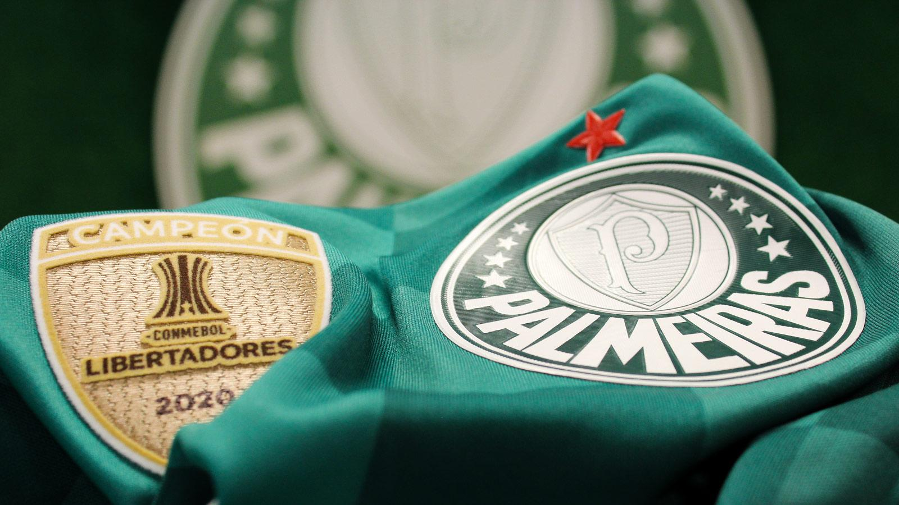

Historia do Clube

O Palestra Itália foi fundado em 26 de agosto de 1914, na cidade de São Paulo, por um grupo de imigrantes italianos que, em sua maioria, eram funcionários das Indústrias Francisco Matarazzo.
A vinda dos clubes italianos do Torino e do Pró Vercelli à cidade de São Paulo, a colônia italiana da época se entusiasma com a idéia de fundar um clube que os represente.
Em meio à excursão dos clubes italianos, Luigi Cervo pocura a redação do Fanfulla, maior jornal da colônia na época, visando publicar uma carta convite conclamando os italianos e descendentes para a fundação de um time de futebol. O jovem redator Vicente Ragognetti, brasileiro filho de italianos, assume a responsabilidade de escrever essa carta-convite, que foi publicada na edição 14/08/1914, uma sexta-feira, na seção “Gli Sports”, à página 4, com o título “Per la formazione di uma squadra italiana di foot ball in S.Paolo”, que convocava os esportistas italianos para a fundação do novo clube.